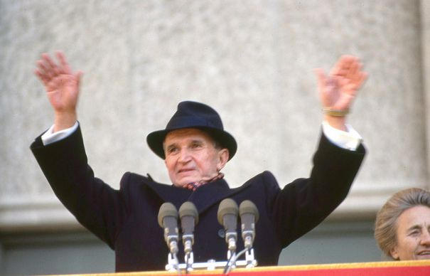

| |
Nicolae Ceaușescu
(26 ianuarie 1918,Scornicești România – 25 decembrie 1989, Târgoviște, România)
A fost un politician român, secretar general al Partidului Comunist Român, șeful de stat al Republicii Socialiste România din 1967 până la căderea regimului comunist, survenită în 22 decembrie 1989.
La 22 decembrie 1989, printr-un decret al CFSN semnat de Ion Iliescu, a fost constituit Tribunalul Militar Excepțional. La 25 decembrie 1989, soții Nicolae și Elena Ceaușescu au fost judecați de acest tribunal în cadrul unui proces sumar, condamnați la moarte și executați la câteva minute după pronunțarea sentinței.
Copilăria și adolescența
În timpul dictaturii lui Nicolae Ceaușescu ziua sa de naștere era sărbătorită pe 26 ianuarie. În perioada postdecembristă a fost prezentat Registrul stării civile care dovedește că Ceaușescu s-a născut în ziua de 23 ianuarie 1918. Din Revista muzeelor și monumentelor reiese că actul de naștere eliberat de primăria localității se găsea la muzeul din Scornicești încă dinainte de 1989, astfel încât prezentarea din perioada postdecembristă nu este o noutate. Data de 26 ianuarie 1918 apare și într-un referat întocmit în perioada interbelică.
Familia Ceaușescu a fost o familie de țărani cu 10 copii. Tatăl său, Andruță, avea 3 hectare de pământ, câteva oi și își mai susținea familia din croitorie. „Nu se interesa de copiii lui; fura, bea, sărea la bătaie și înjura...”, spunea despre el bătrânul preot din Scornicești. Mama lui, Alexandrina (născută Lixandra), era o femeie supusă și muncitoare. Casa lor avea două camere, iar mâncarea de bază era mămăliga. Nicolae a făcut patru clase la școala din sat, în care învățătorul preda într-o sală cursuri simultane pentru elevii mai multor clase. Micul Ceaușescu nu a avut cărți și adesea mergea la școală desculț. Nu avea prieteni, era nervos și imprevizibil. La vârsta de 11 ani, după absolvirea școlii primare, Ceaușescu a plecat la București, unde s-a angajat ca ucenic de cizmar. Alexandru Săndulescu, membru activ al PCR, și-a inițiat ucenicul în misiuni conspirative.
Ceaușescu în timpul procesului de colectivizare
În funcția de subsecretar de stat în ministerul Agriculturii a activat direct la cooperativizarea forțată a agriculturii și a ordonat reprimarea sau arestarea țăranilor care se împotriveau cooperativizării. În 1952, devine membru al Comitetului Central (CC) al Partidului Muncitoresc Român (PMR), la doar câteva luni după eliminarea „facțiunii moscovite” (condusă de Ana Pauker) din conducerea partidului. În 1954, Ceaușescu devine membru deplin al Biroului Politic al PMR, iar ulterior ajunge să ocupe poziția numărul doi în ierarhia PMR.
În toamna anului 1956, aflându-se la Cluj, Ceaușescu a avut un rol important în reprimarea mișcărilor de simpatie față de revoluția ungară.
Gheorghiu-Dej și Hrușciov la Aeroportul Băneasa din București. Ceaușescu în plan secundar (stânga), iunie 1960
Elena Ceaușescu soția lui Nicolae Ceaușescu
La 4 decembrie 1957, având gradul de general-locotenent de armată (fiind șeful Direcției Superioare Politice a Armatei și adjunct al Ministrului Forțelor Armate), Ceaușescu a condus unitățile militare care au înăbușit răscoala țăranilor din Vadu Roșca (jud. Vrancea) care se împotriveau colectivizării forțate. Flancat de două tancuri, Ceaușescu ordonă personal deschiderea focului de pe mitralierele aflate în camioanele care însoțeau tancurile. 9 țărani sunt uciși de gloanțe (Aurel Dimofte, Ionuț Cristea, Ion Arcan, Dumitru Crăciun, Toader Crăciun, Stroie Crăciun, Dumitru Marin, Marin Mihai, Dana Radu) și alți 48 sunt răniți. Varujan Vosganian
politician, economist și scriitor de origine armeană, relatează în cartea sa autobiografică „Cartea șoaptelor” întreaga desfășurare a evenimentelor.
Regimul intern și politica economică
La trei zile de la moartea lui Gheorghiu-Dej, în martie 1965, Ceaușescu preia funcția de secretar general al Partidului Muncitoresc Român (acesta era numele Partidului Comunist Român la acea vreme, după asimilarea forțată, în 1948, a unei aripi a Partidului Social Democrat). Una dintre primele acțiuni ale lui Ceaușescu, odată ajuns la putere, a fost redenumirea Partidului Muncitoresc Român în Partidul Comunist Român. În același timp, el afirmă că România a devenit o țară socialistă și decide schimbarea numelui oficial al țării din Republica Populară Română (R.P.R.) în Republica Socialistă România (R.S.R.). Grupul baronilor (Maurer, Bodnăraș, Stoica), Ion Gheorghe Maurer în primul rând nu a socotit ascensiunea lui Ceaușescu drept periculoasă și a permis încălcarea articolului 13 din statutul abia adoptat la congresul al IX-lea, care interzisese cumulul de funcții și a îngăduit secretarului general al PCR (ambele denumiri au fost adoptate la numitul congres) să ocupe, în 1967, funcția de președinte al Consiliului de Stat.
Ceaușescu a lărgit continuu atribuțiile Consiliului, subordonând atât Consiliul Economic, creat în 1967 cât și pe cel al apărării, creat în 1968. Pe nesimțite Consiliul de Stat s-a transformat dintr-un organ onorific într-unul de conducere efectivă, dublând sau preluând din atribuțiile guvernului condus de Maurer. Pe de altă parte, în 1969, la congresul al X-lea, două treimi din membrii Prezidiului Permanent fuseseră promovați după 1965 prin grija lui Ceaușescu. Preluarea puterii era acum desăvârșită.
A existat o dispută între Ceaușescu și Maurer asupra căilor de dezvoltare a societății românești. Disputa, despre care se știe încă foarte puțin, avea în centru problema ritmului de industrializare pe care Ceaușescu îl dorea accelerat, cu un accent și mai sporit pe industria grea și pe care primul-ministru Maurer l-ar fi vrut mai măsurat, fără neglijarea industriei bunurilor de consum, în acord cu resursele interne, umane, naturale și tehnologice ale țării. Maurer a pierdut această dispută. La numai câteva luni de la plenara din noiembrie 1971, care-și însușise pe deplin tezele din iulie, Maurer cu linia sa economică, de orientare relativ liberală, era criticat indirect dar public de secretarul general.
El este acuzat de neîncredere în politica partidului și de defetism economic. Maurer avea să fie îndepărtat în martie 1974 după alegerea lui Ceaușescu în funcția de președinte. Prim-ministru devine Manea Mănescu. La congresul al XI-lea din noiembrie 1974 Maurer își pierde și locul în Comitetul Central.
Pe de altă parte în aprilie 1972 Ceaușescu anunță că rotirea cadrelor va deveni un principiu de bază al partidului și promisiunea devine realitate: demnitarii statului și activiștii de toate gradele sunt schimbați periodic, în funcție de bunul plac al secretarului general, împiedicând astfel formarea unei baze proprii de putere. În iunie 1973 intră în Comitetul Executiv și Elena Ceaușescu, care avea să devină o a doua putere în stat.
La începutul carierei sale ca șef al statului, Nicolae Ceaușescu s-a bucurat de o oarecare popularitate, adoptând un curs politic independent față de Uniunea Sovietică. În anii 1960 Ceaușescu a pus capăt participării active a României în Pactul de la Varșovia, deși formal țara va continua să facă parte din această organizație până la dizolvarea acesteia (1 iulie 1991). Pactul de la Varșovia și NATO au fost părți în Războiul rece pentru mai mult de 35 de ani. La 20 august 1968, Cehoslovacia a fost invadată de către trupele Pactului de la Varșovia, cu excepția României și Iugoslaviei. Prin refuzul său de a permite armatei române să ia parte la invazia Cehoslovaciei alături de trupe ale țărilor membre ale Tratatului de la Varșovia și o atitudine de condamnare publică activă a acestui act, Ceaușescu reușește pentru o vreme să atragă atât simpatia compatrioților săi, cât și pe cea a lumii occidentale.
Ștefan Voitec înmânându-i lui Nicolae Ceaușescu sceptrul prezidențial în 1974
În data de 26 mai 1973, în cursul unei vizite oficiale în Italia, Ceaușescu a fost primit în audiență particulară de către papa Paul al VI-lea, ocazie cu care Ceaușescu a afirmat cu privire la chestiunea Bisericii Române Unite, interzisă cu 25 de ani în urmă, că o socotește închisă pentru totdeauna, care pentru autoritățile române nu există.[51]Anterior ambasadorul Cornel Burtică s-a întâlnit de mai multe ori cu Agostino Casaroli, ministrul de externe al Vaticanului, ocazii cu care cei doi au ajuns la un acord în acest sensul reglementării situației Bisericii Române Unite.
Nicolae Ceaușescu s-a arătat dispus la o ameliorare a relațiilor dintre România și Sfântul Scaun doar cu condiția „totalei abandonări de către Vatican a problemei fostului cult greco-catolic”, fapt neacceptat de Vatican.
La 28 martie 1974 Marea Adunare Națională a instituit funcția de președinte al Republicii Socialiste România, iar Nicolae Ceaușescu a fost ales în unanimitate și devine astfel primul președinte al României. Prin politica sa externă, condusă cu abilitate, a încercat să se elibereze de dominația sovietică, atrăgând simpatia și aprecierile unor mari lideri politici ca Charles de Gaulle și Richard Nixon. În realitate, singurul scop era consolidarea puterii dictatoriale. În CAER, la indicația lui, delegațiile române se opun la toate propunerile venite din partea URSS. De exemplu, România este una dintre cele doar două țări comuniste europene care au participat la Jocurile Olimpice organizate la Los Angeles, în Statele Unite ale Americii în 1984. De asemenea, România a fost singura țară din blocul răsăritean, cu excepția URSS, care la acea vreme, întreținea relații diplomatice cu Comunitatea Europeană, cu Israelul și cu R. F. Germania. Un tratat incluzând România pe lista țărilor favorizate de Comunitatea Europeană este semnat în 1974, iar în 1980 este semnat un acord vizând schimburile de produse industriale între România și Comunitatea Europeană. Acest fapt a determinat vizitarea oficială a României de către doi președinți ai Statelor Unite ale Americii (Nixon și Ford).
În ciuda cursului independent în relațiile politice internaționale, introdus încă de Gheorghiu Dej, Ceaușescu se opune cu încăpățânare introducerii oricăror reforme liberale pe plan intern. În anii 1980, după venirea lui Mihail Gorbaciov la conducerea Uniunii Sovietice, opoziția lui Ceaușescu față de linia sovietică este dictată în principal de rezistența lui față de destalinizare. Securitatea continuă să își mențină controlul draconic asupra mediilor de informare și înăbușă în fașă orice tentativă de liberă exprimare și opoziție internă.

Nicolae Ceaușescu
| |